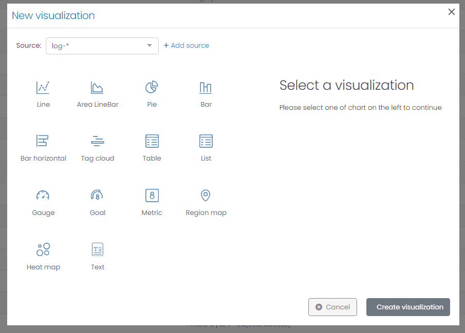
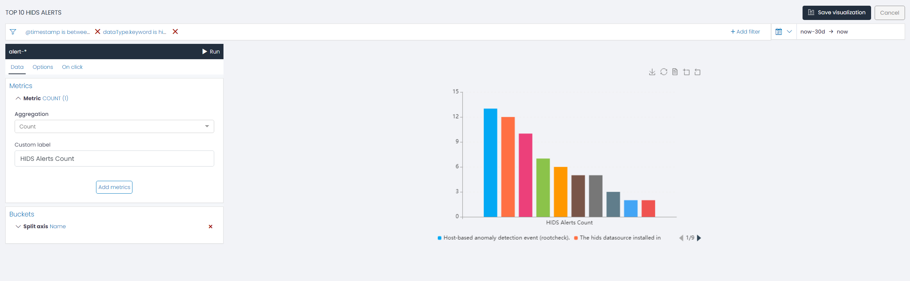
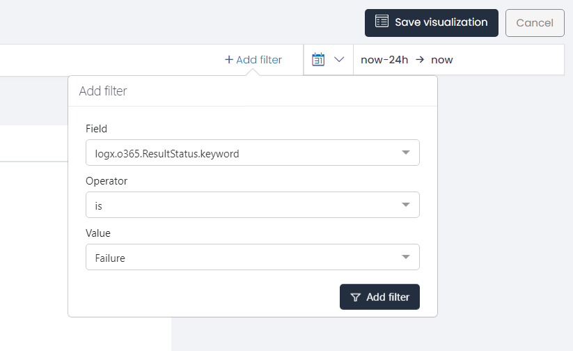
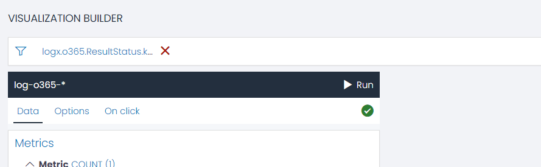
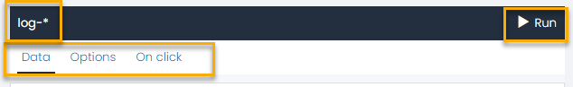
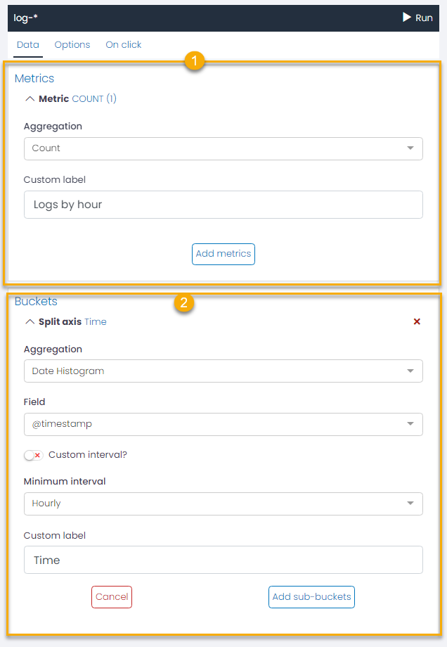

Creating a New Visualization
UTMStack is a powerful solution that leverages the data capabilities of OpenSearch and Logstash to deliver impactful data visualization. By translating your organization’s data into visually appealing charts and graphs, UTMStack empowers users to derive meaningful insights seamlessly. This guide provides step-by-step instructions on creating a new visualization in UTMStack.
How to Create a New Visualization
- Navigate to the Dashboard Editor or Visualization Menu and click on the New Visualization button. This action opens the New Visualization window.

-
The New Visualization window requires two primary parameters to create a visualization:
- Source: The data source for your visualization can be any set of logs, events, or alarms that UTMStack has aggregated.
-
Chart Type: UTMStack supports various chart types, each catering to different data representation requirements:
-
Line: Depicts data trends over time.
-
Area: Similar to line charts, but the area beneath the line is filled, indicating volume.
-
Bar: Useful for comparing quantities or frequencies across categories.
-
Horizontal Bar: Similar to bar charts but oriented horizontally, these are particularly useful when category labels are long or numerous.
-
Tag Cloud:Displays textual data, with the size of each tag corresponding to its frequency or significance.
-
Table: Tables organize data into columns and rows, making it easy to compare multiple data points.
-
List: Lists present data in an ordered or unordered format, perfect for simple, unstructured data.
-
Gauge: Gauge charts are excellent for displaying progress or performance against a set goal.
-
Goal: Goal charts show the progress towards a single, numeric target.
-
Metric: Metric visualizations display a single, large number. It’s useful for highlighting a key figure.
-
Region Map: Region maps show the coordinates in a geographic areas according to associated data values.
- Heat Map: Represents numeric tabular data, with cell colors indicating the value.
- Text: Text allows you to add descriptive text, titles, or notes to your dashboard.
-
- Source: The data source for your visualization can be any set of logs, events, or alarms that UTMStack has aggregated.
After determining the source and chart type, click Create Visualization to customize your visualization.
Navigating the Visualization Editor

By default, UTMStack generates a generalized visualization based on the chosen aggregation metric (Count) and the selected chart type. Users can further refine this data using specific aggregation buckets. For an in-depth understanding of metric aggregations and bucket aggregations associated with each chart type, please refer to the respective chart’s documentation section.
Applying Filters to Visualizations

One of the critical steps in creating a visualization is filtering the data you want to display. This involves comparing a specific field with a selected value using an operator.
For instance, suppose you want to create a visualization focusing on Office 365 logon failures. In this case, select the field logx.o365.ResultStatus.keyword and apply the IS operator to check for equality to the value Failure.This filter will limit the visualization to the unsuccessful login attempts in Office 365.
Understanding Filter Operators
Filter operators in UTMStack help fine-tune data selection within visualizations. Here are the available operators and their functionalities:
-
Is: This operator selects all data entries matching the specific value chosen.
-
Is Not: Contrary to ‘Is’, this operator selects all data entries that do not match the specific value chosen.
-
Is One Of: This operator selects all data entries that match any value from a set of values specified.
-
Is Not One Of: This operator selects all data entries that do not match any value from a set of values specified.
-
Exists: This operator selects all data entries where the specified field exists.
-
Does Not Exist: This operator selects all data entries where the specified field does not exist.
-
Is Between: This operator selects numeric data within a specific value range. The range must align with the input pattern for each data field. For instance, the pattern for @timestamp is YYYY-MM-DDTHH:MM: SS.MsMsMsZ (2021-12-12T02:30:00.000Z.)
-
Is Not Between: This operator selects numeric data not within a specific value range.
-
Contains: This operator selects all data entries containing a specific string.
-
Does Not Contain: This operator selects all data entries that do not contain a specific string.
-
Starts With: This operator selects all data entries that start with a specific string.
-
Does Not Start With: This operator selects all data entries that do not start with a specific string.
-
Ends With: This operator selects all data entries that end with a specific string.
-
Does Not End With: This operator selects all data entries that do not end with a specific string.
The applied filters appear at the top of the interface, where they can be edited, deleted, or reverted as needed.

Having selected your chart type and set up your filters, the next step involves adjusting specific parameters to your chosen chart type. For detailed instructions on how to proceed with each type of chart, please refer to the respective sections Chart Types.
Navigating the Visualization Editor Menu
When you open the Visualization Editor, you will find a menu on the left side of the interface:

The menu displayed highlights the index pattern being used as the foundation for the current visualization And the Run button to generate a preview of the updated chart.
It also offers three key functionalities for customizing your chart:
- Data: This option enables you to define the value axis of your chart by choosing suitable metric aggregations and bucket agregations.
- Options: Utilize this section to personalize your chart’s aesthetics and fine details to your liking.
- One Click: This interactive feature requires the presence of at least one bucket. Clicking on a specific data point or series on the chart triggers a redirection to the category (ALERTS, EVENTS, or VULNERABILITIES) initially chosen during chart creation. The resultant view is filtered based on the series you clicked on.
Configuring Metric and Bucket Aggregations for Charts
In UTMStack, crafting the right visualization involves the careful selection and application of metric and bucket aggregations. These play a pivotal role in determining how your data is analyzed and presented.

- Metric Aggregation Choose the right metric aggregations for your chart. UTMStack offers several aggregations options:
- Count: Returns a raw count of the elements in the selected index pattern.
- Average: Returns the average of a numeric field. You’ll need to select the appropriate field from the drop-down.
- Sum: Returns the total sum of a numeric field. Choose the relevant field from the drop-down.
- Min: Returns the minimum value of a numeric field. Select the corresponding field from the drop-down.
- Max: Returns the maximum value of a numeric field. Choose the appropriate field from the drop-down.
- Unique Count: Returns the number of unique values in a field (cardinality aggregation). Select the relevant field from the drop-down.
For each aggregation, you can change the default display label by entering a custom string in the “Custom Label” field.
The Add Metrics button and the red cross symbol allow you to add or remove aggregations as per your needs.
- Bucket Aggregation Bucket aggregation serves to categorize data based on specific criteria, enabling meaningful insights. The two bucket aggregation types in UTMStack are:
-
Date Histogram: This type constructs a date-wise distribution based on a numeric field. Here, you need to pick a field representing the timeline and stipulate a minimum time frame (options include minute, hourly, daily, weekly, monthly, or yearly) in the Minimum intervals. For a custom interval frame, select the Custom interval option and specify a time unit. Time units can be milliseconds (ms), seconds (s), minutes (m), hours (h), or days (d). The Custom Label field allows you to modify the display label.
-
Terms Terms bucket aggregation categorizes data into buckets based on distinct values present in a specified field. These buckets are dynamically generated, each corresponding to a term found in the data field. This approach is beneficial when you want to analyze and visualize data with distinct or categorical values.
Here’s how you can configure the Terms bucket aggregation in UTMStack:
- Field: Choose the field from which the terms for the buckets will be derived. This field will be the basis for categorizing the data into different buckets.
- Order By: Decide how the buckets should be ordered. You can order them based on a metric (e.g., count, sum, average, min, max, etc.) or alphabetically (by term). The bucket with the highest value in the selected metric or alphabetical term will be presented first, depending on your chosen sort direction.
- Order: Define the sort direction of the buckets. You can sort the buckets in either ascending or descending order.
- Size: Specify the number of terms/buckets that should be returned per page.
- Custom Label: If you want to change the default label for the buckets, enter your desired text in the Custom Label field.